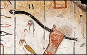

Throw stick
Throw stick

The ancient Egyptians often used throw sticks to hunt for birds. Hunting was an important way of getting food, but was also considered sport.
This is a special throw stick that was made to go in a pharaoh's tomb. Objects made to go in tombs were not actually used, but were put in the tomb so that they could be used in the next life.